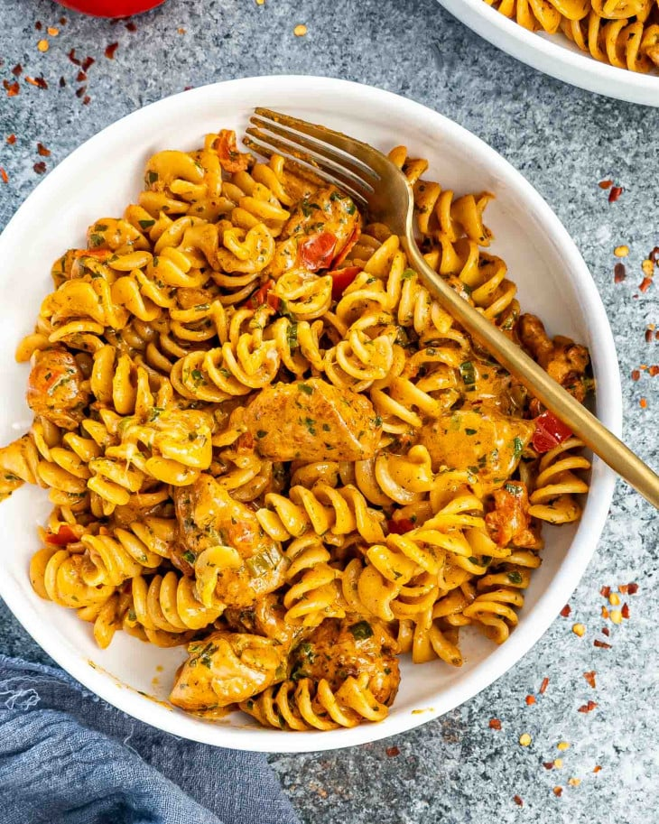

Chicken pasta

Wanna learn how to make a mind breaking chicken pasta? Follow this spectacular recipe!
Ingredients
Pasta
Butter
Chicken
Spice
Salt
Black Pepper
Tomatoes
Green Onions
Parsley
Chicken Broth
Mozzarella Cheese
Cook The Pasta
Bring a large pot of well-salted water to a boil. Now, cook the pasta according to the package directions or until al dente in texture.
Drain the noodles and set them aside for a later step.Sauté The Chicken
While the pasta is cooking, begin cooking the chicken. Melt the unsalted butter over medium-high heat in a large skillet. Then add the
chicken pieces to the hot pan and sprinkle them with the chili powder, red chili flakes, salt, and black pepper. Sauté the chicken for about 5 minutes.-
Make the sauce
Once the chicken breast is cooked, add the tomatoes, green onions, and chopped parsley to the skillet. Stir everything together and cook
for another 2 minutes. Then add the cream and chicken broth to the mixture and cook until it comes to a boil.
Assemble the dish and serve.
To finish the dish, add the cooked rotini to the skillet and toss it with the chicken and sauce to coat. Then sprinkle with the grated
mozzarella cheese and some more parsley.